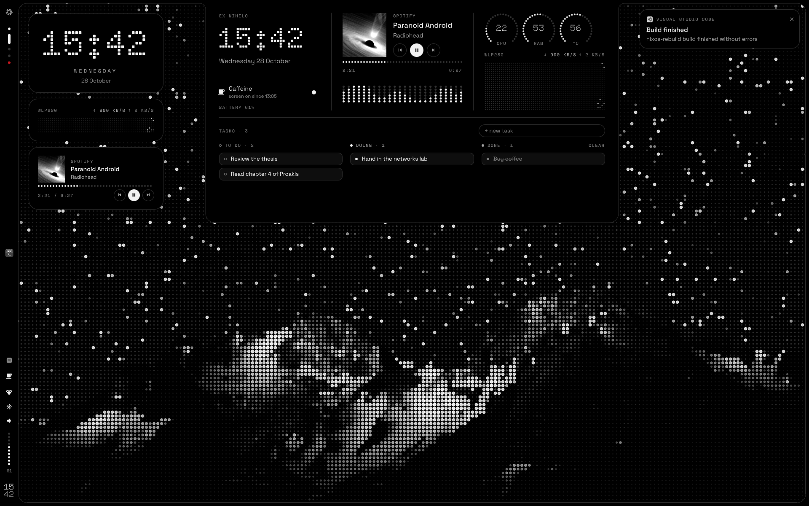

ex nihilo
A monochrome, dot‑matrix desktop for NixOS
Caelestia's frame and drawers, dressed in the language of Nothing: greys for hierarchy, dots for display, red only to interrupt. All of it declared in Nix, from the boot splash to the lock screen.

One shape around the screen
The frame is a single black shape. Its left side widens into the bar, and the drawers grow out of it with concave joints, so they read as part of the hardware rather than windows on top.


Dashboard
Time, music with its cover and spectrum drawn in dots, system dials, a network oscilloscope, a small kanban and caffeine to keep the screen awake.

Settings
Wi‑Fi with passwords, Bluetooth, audio output, segmented sliders and the notification history.

Launcher
Apps stay grey until you select them. Type > for actions, = to calculate and ? to ask Nilo.

Light on the edge
Every notification sends a segment of light around the frame, and critical ones run twice, in red, like the battery warnings at 15, 10 and 5 %. Plug in the charger and two lights climb both sides from the bottom until they meet at the top.
Nilo, an assistant that lives here
Two white eyes in the launcher, and a model that runs on this computer: Qwen 3.5 on Ollama, with no account and no cloud. They sleep while the model is unloaded, wake up as you type, look up while it thinks and from side to side while it searches.
It answers, searches the web if you let it and looks at this computer. In one repository of yours it can also change files and commit and push, once you have authorized it, and every change waits for your confirmation. After a few minutes without questions it falls asleep and the model leaves memory.
? in the launcher
It introduces itself
The first time, it says hello, shows how to call it, offers the models that fit your memory and asks what it may do.

Every change, as a diff first
A file waits for enter twice or a click before it is written, like a commit. Escape leaves it as it was.

Nothing without your say
Files and git stay off until you authorize them, for one repository. Choosing another turns them off again.
# hosts/<name>/default.nix: off by default
nihil.nilo =
{
enable = true;
acceleration = "vulkan"; # or "cpu", "rocm", "cuda"
};Three rules
One file, theme/nihil.nix, holds the tokens. GTK, the terminal, the editor, the compositor, the lock screen, the greeter, the boot splash and the shell are all generated from it.
Hierarchy is made with greys
Red never decorates. It only interrupts: a failed login, a critical notification, the recording LED, a destructive action.
Dots are for display
Doto draws the clock and the big numbers. Text is set in Space Grotesk and metadata in Space Mono.
The frame is hardware
Opaque and flat, with no shadows. Windows sit concentric with it: their rounding is the frame's minus the gap.
- void
#000000frame, bar, drawers - surface
#0E0E0Ecards - raised
#1A1A1Ahover, tracks - line
#2A2A2A1 px lines - off
#333333unlit LEDs - muted
#7A7A7Ametadata - dim
#A3A3A3secondary text - ink
#F2F2F2text, lit LEDs - signal
#D71921interrupts only
From nothing, at boot
The NixOS snowflake as an LED matrix: it switches on from the centre, then a band of light sweeps it until the login screen. theme/plymouth.py renders every frame when the system is built.
The wallpapers work the same way. Every image in wallpapers/ is rendered as dots once per screen, at its native size, so each LED lands on exact pixels.

Spanish or English
One option sets every string of the shell, the lock screen and the greeter, and the language of their dates.


# hosts/<name>/default.nix
nihil.language = "en";Install
This is a personal configuration for one ThinkPad, written as a flake. Read hosts/ and modules/ before you switch a machine you care about; the README covers every step in detail.
-
Clone the repository
git clone https://github.com/poligle/Nihil-Shell ~/nixos-config -
Describe your screens
Copy
hosts/thinkpadto a new host with your hardware configuration, then list its outputs. Sizes are logical, after rotation.nihil = { primaryOutput = "eDP-1"; wallpaper = "night"; language = "en"; outputs = { "eDP-1" = { width = 1920; height = 1200; }; "DP-1" = { width = 1080; height = 1920; bar = false; }; }; }; -
Build and switch
The first build renders every wallpaper and the boot splash.
sudo nixos-rebuild switch --flake ~/nixos-config#<name>
Options
All of them live under nihil.* in modules/nihil.nix.
| Option | Default | What it does |
|---|---|---|
language | "es" | Language of the shell, lock screen, greeter and script messages: "es" or "en". |
outputs | none | Screens of the host: logical size, whether the frame widens into the bar, dot pitch. |
primaryOutput | none | Screen for the desktop widgets and the lock and login backgrounds. |
wallpaper | "night" | Default wallpaper: a file name in wallpapers/. |
soundPack | "nihil" | The synthesised NIHIL sounds, or "classic" for the earlier ones. |
trayHidden | [ "nm-applet" "blueman" ] | Tray items to hide, by part of their id or title. The bar already shows Wi‑Fi and Bluetooth. |
nilo. | false | Nilo, the assistant, with Ollama running its model on 127.0.0.1. |
nilo. | "cpu" | What runs the model: "cpu", or the GPU through "vulkan", "rocm" or "cuda". |
nilo. | 16384 | Tokens of conversation Nilo keeps in view: more remembers more and takes more memory. |
Screenshots on this page are the shell rendered in a test harness with sample data: the networks, the track and the notifications are made up, and Nilo is its real agent answering a scripted model.